L22 考前衝刺包
考前一天、考前一小時拿來掃的整理：必看重點表、動手練習室、圖卡。整理觀念與易錯點，部分圖卡引用官方學習指引與公告試題。
考前必看
TAR 指定「很重要、必複習」的內容。11/13 考前一天、11/14 考前一定要看完這一頁。同步在 Notion「L22 陪跑進度總覽」頁底。
1｜K7 參數、超參數、調參、正則化（2026-11-09 指定）
| 名詞 | 意思 | 例子／關鍵字 |
|---|---|---|
| 參數 | 模型從資料學出來 | 權重、斜率 |
| 超參數 | 訓練前人先設定 | 樹數、深度、學習率、K、λ |
| 網格搜尋 | 所有組合全試 | 3×4＝12 種 |
| 隨機搜尋 | 隨機抽幾種試 | 組合多時較省時 |
| 交叉驗證 | 訓練資料切 K 份輪流當小考 | 不碰測試資料 |
| L1 正則化 | 罰絕對值，部分係數變 0 | 順便挑特徵（Lasso） |
| L2 正則化 | 罰平方，係數整體變小 | Ridge |
口訣：參數學出來，超參數人先設；網格全試、隨機抽試，搭交叉驗證；L1 歸零挑特徵，L2 全體縮小。
曾經答錯： - 以為「訓練後的權重」是超參數 → 錯。訓練後才有的＝學出來的＝參數。 - 漏選「學習率」→ 學習率是訓練前就要設定好的，是超參數。
容易混淆： - 工廠講的「製程參數、成型參數」（溫度、壓力、時間）是機台的設定值。放進機器學習時，它們是特徵（輸入資料），不是模型的參數，也不是超參數。 - 判斷法：先問「這是誰的參數？」模型內部學出來的是參數；控制模型怎麼學的設定是超參數；機台或製程的設定，對模型來說是資料。
2｜K5 分類指標、門檻、ROC（2026-11-13 補）
| 名詞 | 公式／意思 | 考題關鍵字 |
|---|---|---|
| 召回率（真陽率） | 抓到 ÷（抓到＋放走），分母看「實際」列 | 不能放過任何一個 |
| 精確率 | 抓到 ÷（抓到＋冤枉），分母看「預測」欄 | 怕假警報 |
| 假陽率 | 冤枉 ÷（冤枉＋沒事） | ROC 橫軸 |
| 門檻 | 分數多高才喊；調高＝線往右＝喊的人變少、召回率下降 | 零容忍→調低門檻 |
| ROC 曲線 | 縱軸真陽率、橫軸假陽率；只往右上走，不會往下掉 | 對角線＝亂猜 0.5 |
| PR-AUC | 極不平衡時比 ROC-AUC 誠實 | 但題目問「主要原因」先找流程錯 |
| 混淆矩陣 | 列＝實際，欄＝預測 | 「橫列表預測值」是錯的 |
曾經答錯： - 門檻 0.5→0.8 以為喊的人「變多」→ 錯，變少（線往右移）。 - 真題 115-32 選 D → 正解 B：SMOTE 在切分前做＝資料洩漏，分數虛高。正確做法：先切，只對訓練集做 SMOTE。 - 精確率 4÷24：分母是「他喊了幾次」，不是真的不良品數。
公式畫框記（圖在下方「圖卡」K5 第 2 張）： - 召回率＝TP ÷（TP＋FN）：橫的第一列 - 假陽率＝FP ÷（FP＋TN）：橫的第二列 - 精確率＝TP ÷（TP＋FP）：直的第一欄 - 準確率＝（TP＋TN）÷ 全部：對角線 - 口訣：兩個列給 ROC，一個欄是精確，對角線是準確。
3｜K4 選哪一種檢定（2026-11-13）
| 比什麼 | 幾組／什麼關係 | 用什麼 |
|---|---|---|
| 平均數 | 兩組、同一批人前後 | 成對樣本 t 檢定（115-7） |
| 平均數 | 兩組、不同的人 | 獨立樣本 t 檢定 |
| 平均數 | 三組以上（避免兩兩比較） | 單因子變異數分析（115-4） |
| 平均數 | 已知母體標準差或大樣本 | Z 檢定（115-8） |
| 比例（良率、點擊率） | 兩組 | 雙比例 Z 檢定（114-38） |
| 次數、類別 | 兩個類別變數有沒有關聯 | 卡方獨立性檢定 |
| 次數分布 | 符不符合預期分布 | 卡方適合度檢定 |
陷阱：變異數分析比的是「平均數」；比百分比不用 t 檢定。
4｜K1 相關係數（2026-11-13）
- 直線、沒有離群值 → 皮爾森（114-30）。對離群值最敏感。
- 有離群值、1 到 5 分等級、不一定是直線 → 斯皮爾曼／肯德爾（看名次）。
- 不怕離群值：肯德爾 ＞ 斯皮爾曼 ＞ 皮爾森（115-24：「斯皮爾曼比肯德爾穩健」是錯的）。三者範圍都是 −1 到 1。
- 偏態：平均數跟著尾巴跑。
5｜K2 機率與主題模型（官方 0 題，題庫考定義）
- 中央極限定理：樣本平均數的分布會接近常態（不是原始資料）。
- 大數法則：抽越多，樣本平均越接近真值（越「準」）。
- 互斥：不能同時發生；互斥不等於獨立。
- 貝氏定理：用新證據把先驗機率更新成後驗機率。
- 單純貝氏分類器：假設類別已知時，特徵之間條件獨立，所以機率可以直接相乘（垃圾信過濾）。
- 主題模型 LDA：從大量文章找出主題，非監督；別和分類用的線性判別分析搞混。
互動練習
圖卡
點縮圖看原圖。
K1 敘述統計（1 張）
K2 機率分佈（22 張）
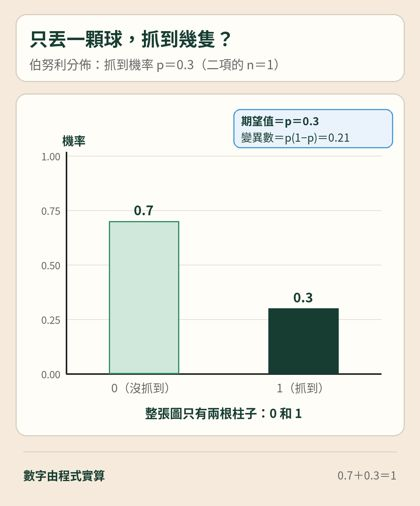
伯努利分佈｜丟一顆球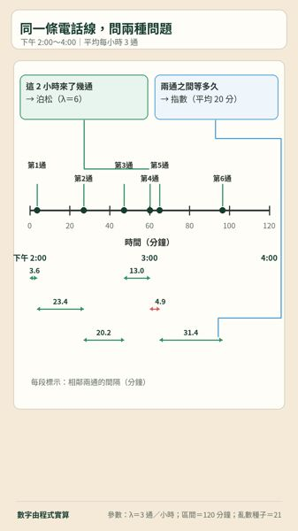
招生專線時間軸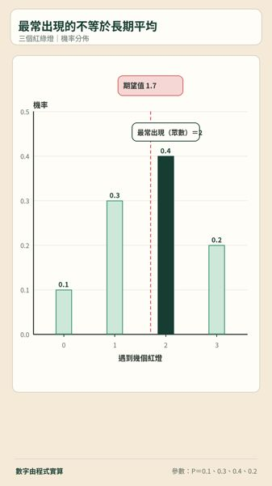
紅燈個數與期望值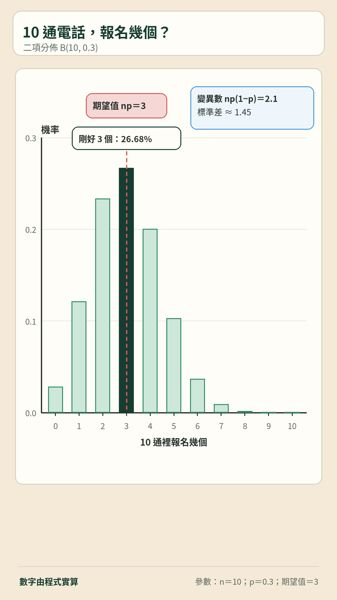
二項分佈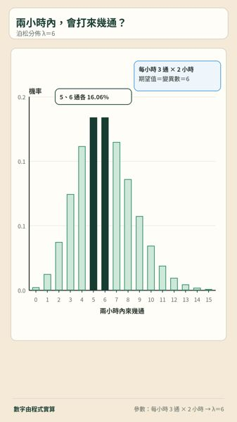
泊松分佈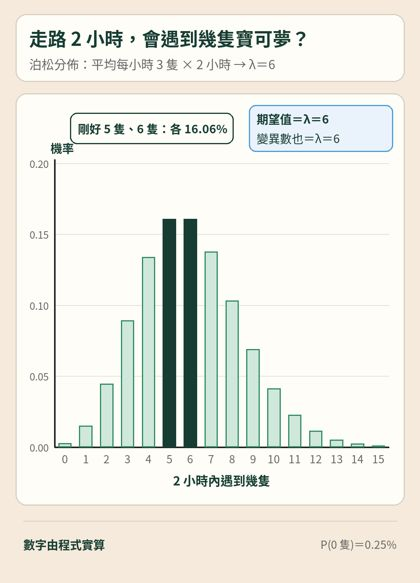
泊松分佈｜寶可夢版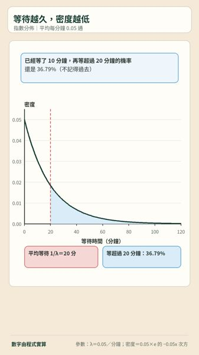
指數等待時間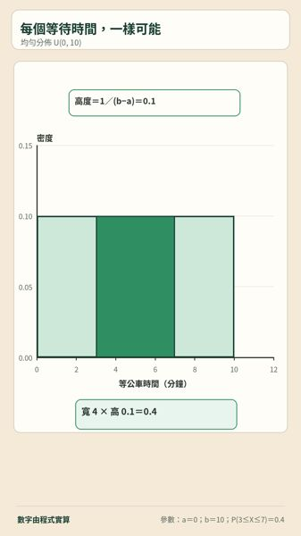
均勻分佈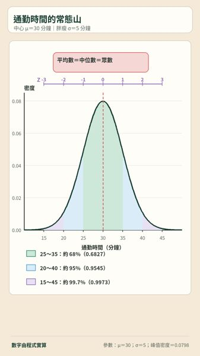
常態曲線與經驗法則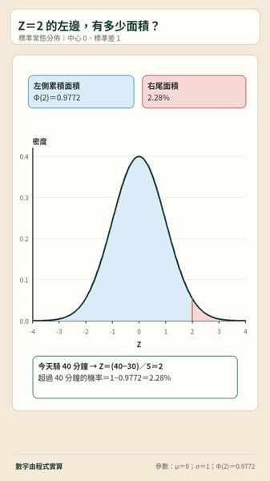
標準常態與累積機率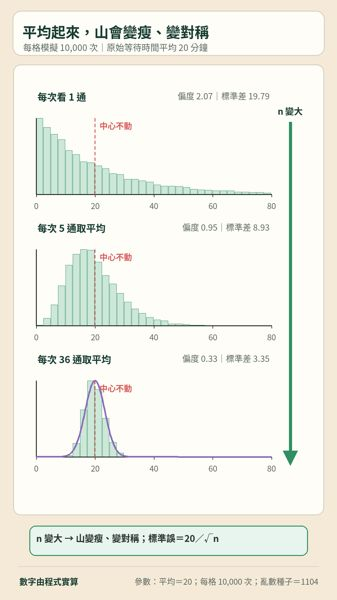
中央極限定理三格圖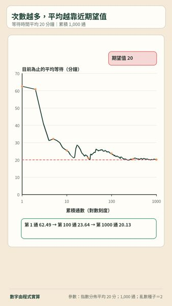
大數法則收斂線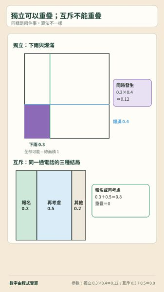
獨立與互斥面積圖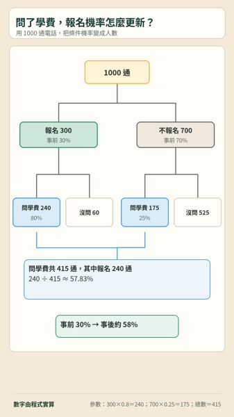
1000通電話貝氏樹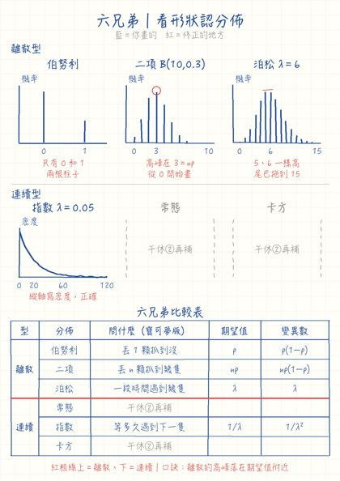
手繪風｜六兄弟｜看形狀認分佈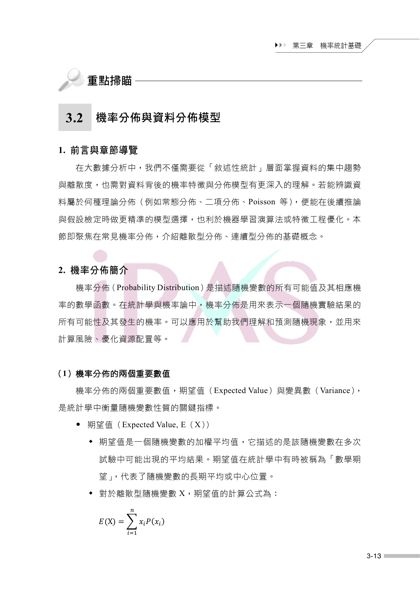
學習指引 PDF 第 20 頁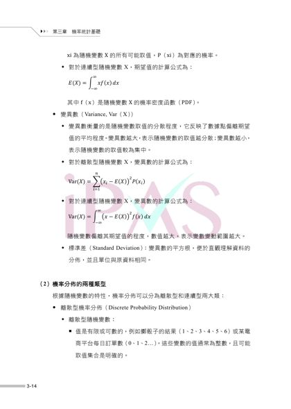
學習指引 PDF 第 21 頁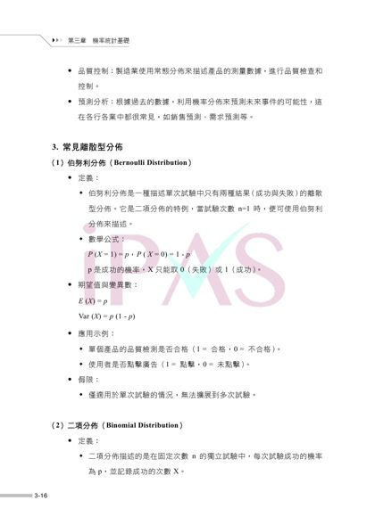
學習指引 PDF 第 23 頁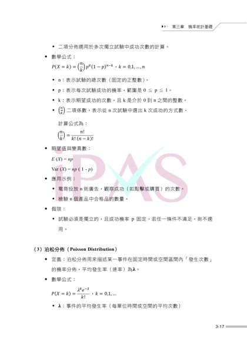
學習指引 PDF 第 24 頁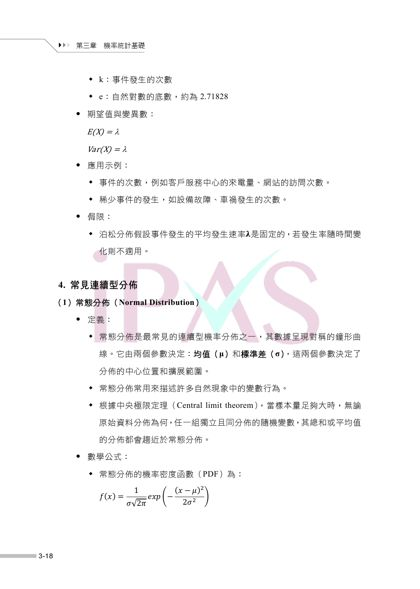
學習指引 PDF 第 25 頁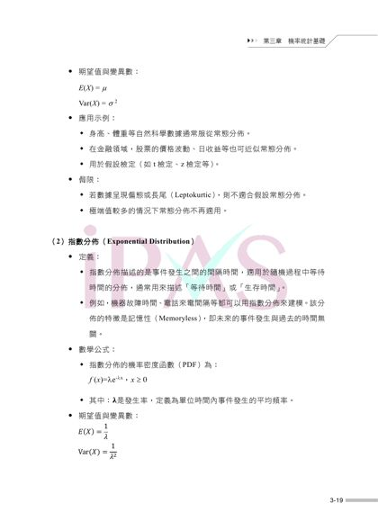
學習指引 PDF 第 26 頁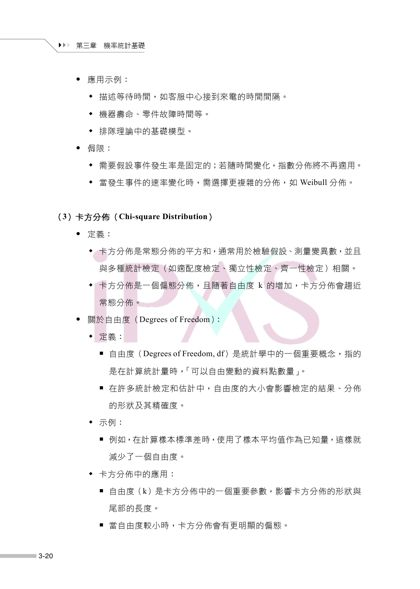
學習指引 PDF 第 27 頁K3 假設檢定（13 張）
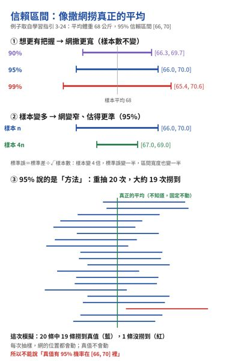
信賴區間三件事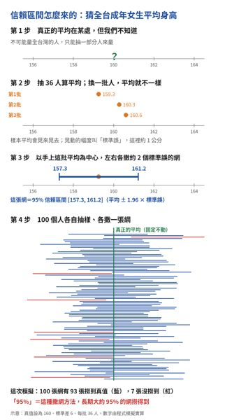
信賴區間怎麼來的四步驟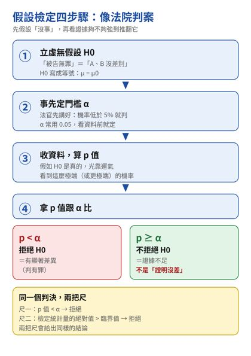
假設檢定四步驟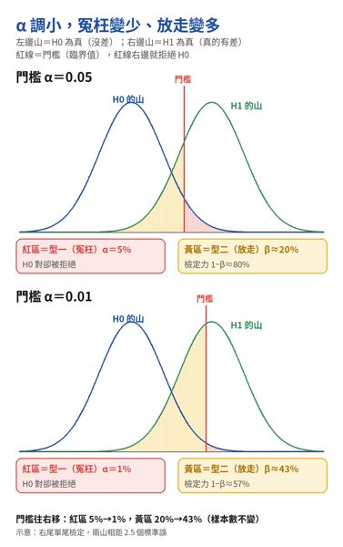
α與β的取捨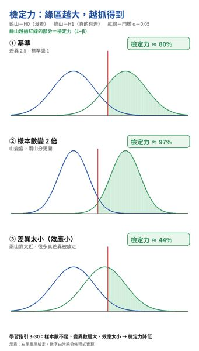
檢定力的三個開關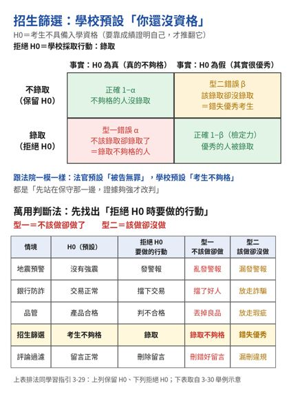
型一型二萬用判斷法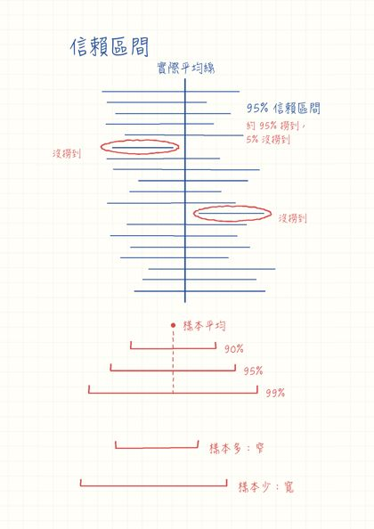
手繪風｜信賴區間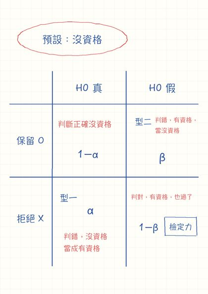
手繪風｜型一型二表｜招生篩選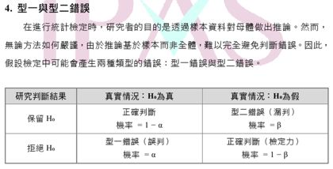
型一型二錯誤表（學習指引 3-29）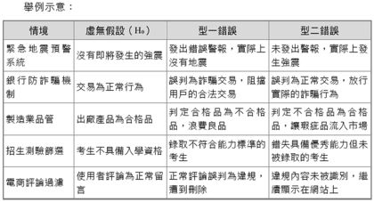
型一型二生活例子（學習指引 3-30）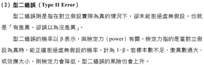
檢定力定義（學習指引 3-30）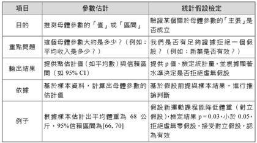
參數估計與假設檢定（學習指引 3-24）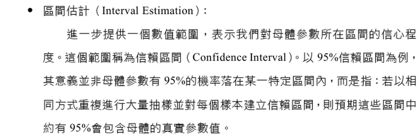
信賴區間的意義（學習指引 3-24）K5 分類指標（7 張）
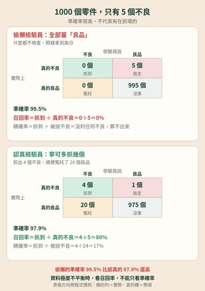
偷懶檢驗員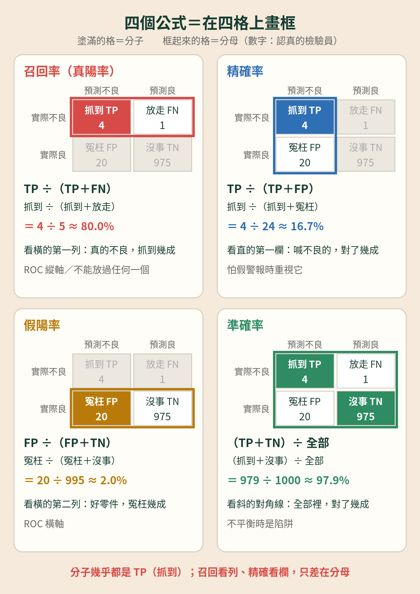
四個公式畫框記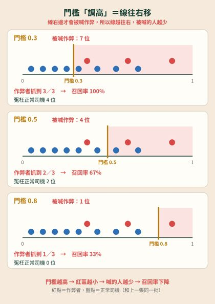
門檻往右移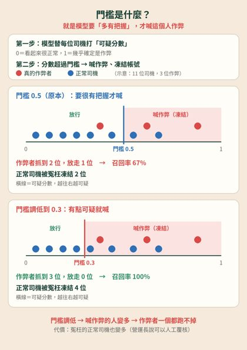
門檻是什麼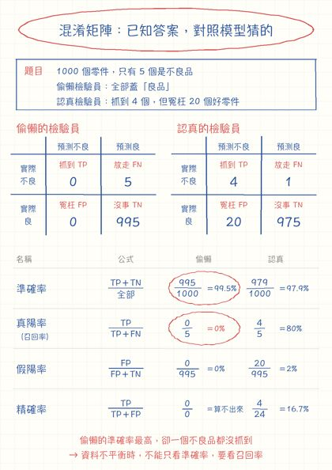
手繪風｜K5偷懶與認真檢驗員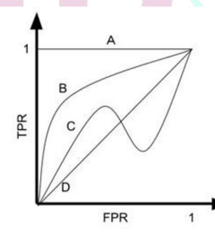
真題 115 年第 23 題｜ROC 四條曲線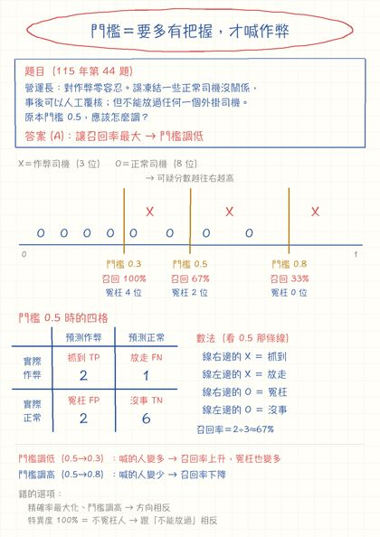
手繪風｜K5 司機門檻（115 年第 44 題）K6 分析方法（1 張）
K7 模型訓練（2 張）
K10 資料處理（2 張）
K11・K12 視覺化（1 張）
口訣圖卡（27 張）
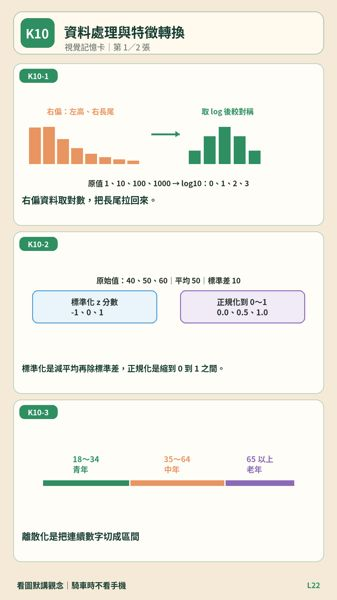
K10｜資料處理與特徵轉換｜口訣圖卡1 K10｜資料處理與特徵轉換｜口訣圖卡2 K11｜視覺化工具｜口訣圖卡1 K12｜視覺化設計原則｜口訣圖卡1 K13｜隱私與治理｜口訣圖卡1 K13｜隱私與治理｜口訣圖卡2 K1｜敘述統計與相關｜口訣圖卡1 K1｜敘述統計與相關｜口訣圖卡2 K1～K5｜口訣圖卡｜10張總覽 K2｜機率分佈與定理｜口訣圖卡1 K2｜機率分佈與定理｜口訣圖卡2 K3｜假設檢定｜口訣圖卡1 K3｜假設檢定｜口訣圖卡2 K3｜假設檢定｜口訣圖卡3 K4｜選哪一種檢定｜口訣圖卡1 K5｜分類指標｜口訣圖卡1 K5｜分類指標｜口訣圖卡2 K6｜分析方法辨識｜口訣圖卡1 K6｜分析方法辨識｜口訣圖卡2 K6｜分析方法辨識｜口訣圖卡3 K6～K13｜口訣圖卡｜15張總覽 K7｜模型訓練與調校｜口訣圖卡1 K7｜模型訓練與調校｜口訣圖卡2 K8｜大數據元件｜口訣圖卡1 K8｜大數據元件｜口訣圖卡2 K9｜資料儲存與 NoSQL｜口訣圖卡1 K9｜資料儲存與 NoSQL｜口訣圖卡2